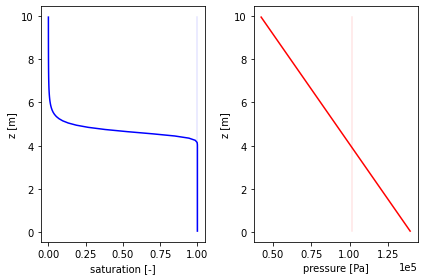

Richards’ Equation, steady state
This is a simple verticle, pseudo-1D column of water with a water table below the surface. It solves the pressure to steady-state. For constant density and incompressible solid, this would be a linear pressure profile, but we include a pressure-dependent density.
Author: Ethan Coon
[1]:
%matplotlib inline
[2]:
import sys,os
sys.path.append(os.path.join(os.environ['ATS_SRC_DIR'],'tools', 'utils'))
import ats_xdmf
import plot_column_data
import numpy as np
from matplotlib import pyplot as plt
[3]:
# load the ATS solution
directory = "./richards_steadystate.demo"
vis = ats_xdmf.VisFile(directory)
vis.loadMesh(columnar=True)
[4]:
# plot the solution
fig = plt.figure()
axs = fig.subplots(1,2)
plot_column_data.plot_subsurface(vis, ['saturation_liquid',], axs[0], None, 'b')
plot_column_data.plot_subsurface(vis, ['pressure',], axs[1], None, 'r')
axs[1].ticklabel_format(style='sci', axis='x', scilimits=(0,0))
axs[0].set_xlabel('saturation [-]')
axs[0].set_ylabel('z [m]')
axs[1].set_xlabel('pressure [Pa]')
axs[1].set_ylabel('z [m]')
plt.tight_layout()
plt.show()

[ ]: